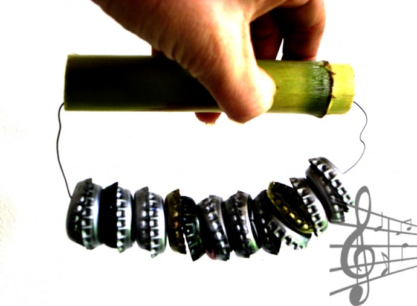

Facebook
Pinterest
Instagram
⌕ Search
ES
EN
DE
☰ Menu
Home
The House
Accessories
Decorate
Instruccions
Blog
Holidays
Christmas
Easter
Halloween
Carnival & costumes
Valentine’s Day
Birthday
Mother’s/Father’s Day
Back to school
Seasons
Spring
Summer
Autumn
Winter
What to do
Toys
Games
Printables
Food & recipes
Decoration
Painting
Experiments
Outdoors
Learning
Animals
Gifts & jewellery
Building & tricks
Other crafts
Material
Paper
Cardboard
Paper rolls
Recycling
Stones
Leaves & nature
Fabric & sewing
Home
›
Blog
Blog
Holidays
Christmas
Easter
Halloween
Carnival & costumes
Valentine’s Day
Birthday
Mother’s/Father’s Day
Back to school
Seasons
Spring
Summer
Autumn
Winter
What to do
Toys
Games
Printables
Food & recipes
Decoration
Painting
Experiments
Outdoors
Learning
Animals
Gifts & jewellery
Building & tricks
Other crafts
Material
Paper
Cardboard
Paper rolls
Recycling
Stones
Leaves & nature
Fabric & sewing
Toy
Drum 01
Food
Monkey
Activity
Snake
Activity
Silhouette 02
Activity
Memory
Food
Magic crone
Activity
Bowling pins
Activity
Potatoes
Activity
Costumes
Activity
Telefon
Occasion
Hearts
Material
Another owl
Activity
Sandglass
Forms
Silhouette 01
Food
Popcorn
Activity
Weave 02
Toy
Special rattle

Activity
Crocodile 03
Activity
Bubble paint
Food
Muffins
Activity
Birds
Activity
Tower 02
Activity
Ice hands
Activity
Letters 02
← Newer
Page 36 / 40
Older →